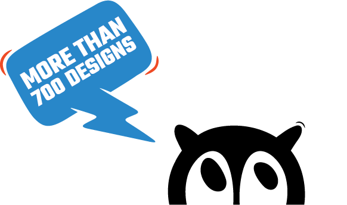

En af de mest ikoniske collabs i Nikes historie er sammen med Virgil Ablot som går under navnet OFF WHITE. I 2020 lavede de et samarbejde hvor alt gik op i en højere enhed
Denne sneaker er et praktisk par at eje for dets holdbarhed, komfort og åndbarhed, der fungerer til brug hele dagen. Den ekstra wauw-faktor er dens vilde design stil, der helt sikkert kan løfte ens sædvanlige sneaker. Selvom den anses for at være tungere end normale sneakers, er denne en væsentlig opdatering til den sædvanlige Dunk sneaker-fornemmelse, som også kan bruges på skateboardet.
Samarbejdet mellem Nike og OFF-WHITE er ikonisk, og efter Virgil Abloh gik bort er de blevet til sneakers som man aldrig vil glemme.
- Torben Drejergaard - Skosamler

Nike og Virgil Abloh fortsatte deres moderigtige forhold ved at skabe helt nye sneakers til året 2020. Virgil tilføjede forskellige elementer til den klassiske Dunk-silhuet for at komme med det han er kendt for, nemlig sine uortodokse designs som er blevet et signaturlook for OFF-WHITE.
Der blev kombinerede forskellige materialer på Nike Air Rubber Dunk x Off-White for at skabe et unik og enestående design. Den fik en stil som ligger tæt op den glemte klassikere Nike P-6000, men også den velkendte Nike Dunk.
Nøglefunktionerne ved denne sneaker er at den er tro til alle andre OFF-WHITE sneakers, da den er fyldt med materialer og teknologier. I stedet for at man har brugt det klassiske læder til baselayer, er denne model lavet med åndbart mesh med læderstropper på mellemfoden. Sådan en omarbejdede detalje skaber et mere ventileret spark med en masse fodstøtte. Nike har også valgt at brugte gummi og ruskind på sin tåboks for at øge dens generelle holdbarhed, hvilket er et skud ud til skateboardsneakers. For at få en lille ekstra detalje på sneakeren, er der blevet tilføjet den synlige Air-enhend som er kendt fra Air Max modelleren. OFF-WHITE detaljerne er også på denne sneakers med adskillige dekonstruerede elementer, såsom synligt skum på tungen, mærkesnørebånd og det orange lynlåsslips med ruskindsfinish. I mellemtiden vises den off-white signaturtekst på den indvendige side af skoen.
Til sidst så lancerede Nike udelukkende de tre farvevarianter af Air Rubber Dunk x Off-White i forskellige regioner over hele kloden i størrelser til hele familien.
· The Green Strike i Nordamerika.
· University Blue i Europa, Mellemøsten og Afrika.
· University Gold i Kina og Asien-Stillehavsregionerne.